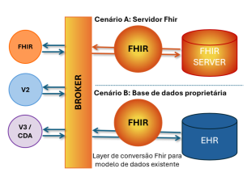
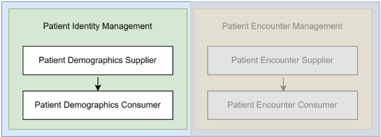

HL7 PT FHIR Implementation Guide: Example IG Release 1 | STU1
1.0.0 - STU1

HL7 PT FHIR Implementation Guide: Example IG Release 1 | STU1
1.0.0 - STU1

HL7 PT FHIR Implementation Guide: Example IG Release 1 | STU1, publicado por HL7 Portugal. Este guia não é uma publicação autorizada; é a compilação contínua para a versão 1.0.0 construída pela FHIR (HL7® FHIR® Standard) CI Build. Esta versão é baseada no conteúdo atual de https://github.com/hl7-pt/patient-admin-ig/tree/issue-9 e muda regularmente. Veja o Diretório de versões publicadas
| Official URL: http://example.com/fhir/hl7pt/ImplementationGuide/hl7.fhir.pt.patient-admin-ig | Version: 1.0.0 | |||
| Active as of 2020-02-26 | Computable Name: ExampleIG | |||
The specification herewith documented is for the time being a proof of concept specification, and may not be used for any implementation purposes. No liability can be inferred from the use or misuse of this specification, or its consequences.
O presente guia de implementação (IG) foi desenvolvido com o objetivo de uniformizar a definição, utilização e partilha de informações entre diferentes sistemas de informação de saúde, assegurando uma interoperabilidade eficaz entre diferentes entidades e profissionais de saúde.
Este guia fornece especificações técnicas utilizando o FHIR Versão 4B, e funcionais e pressupõe que o leitor esteja familiarizado com a especificação funcional e com esta versão do FHIR.
Em Portugal começam a existir várias implemetações em FHIR que mapeaiam as implementações de mensagens HL7v2.x para mensagens HL7 FHIR. Este IG pretende dar suporte a integrações em FHIR que implementam o paradigma de FHIR Messaging, fazendo a ponte entre as implementações que já existem em HL7v2.x e mensagens HL7 FHIR. Tem como base o perfil PatientAdministration Management da Estrutura Técnica de Infraestrutura de TI do IHE para a abordagem em HL7v2.x e que tem como atores "Patient Demographics Supplier" e "Patient Demographics Consumer".
O paradigma de mensagem FHIR permite manter a comunicação assíncrona de mensagens e evoluir a comunicação para o Standard FHIR e ao mesmo tempo, usando ferramentas de conversão, manter a comunicação com os sistemas que mantém as integrações em HL7 v2 (Fig.1).

Fig.1 -Fhir Messaging Paradigms Schema
O perfil IHE PatientAdministration Management apresenta duas transações: Patient Identity Management e Patient Enconter Management. O âmbito desta IG é focado na transação Patient Identity Management (Fig.2) o qual inclui as operações que permitem fazer a gestão dos dados demográfios dos utentes.

Fig.2 - Atores da transação Gestão da Identidade do Utente
O termo “dados demográficos do utente” refere-se aos dados da identidade completa do utente, incluindo informações sobre pessoas relacionadas com ele, como cuidador principal, médico de família, tutor, familiares mais próximos, entidades responsáveis, etc.
A transação Patient Identity Management transmite dados demográficos do utente no domínio de identificação do utente e contém eventos para criação, atualização, fusão/associaçao de utentes. Esta transação é usada nos vários contextos como internamento, e todos aqueles que recebem um leito na unidade de saúde, ou urgência, consulta externa, hospital de dia, ambulatório e outros que não têm atribuído um leito na unidade de saúde.
Em Hl7v2, as mensagens que suportam as ações necessárias estão especificadas no profile IHE mencionado anteriormente prevendo a toca de mensagens com eventos especificos já defenidos pelo standard HL7 v2:
| Event | Trigger | Message Static Definition |
|---|---|---|
| Create new patient | A28 | ADT^A28^ADT_A05 |
| Update patient information | A31 | ADT^A31^ADT_A05 |
| Change Patient Identifier List | A47 | ADT^A47^ADT_A30 |
| Merge two patients | A40 | ADT^A40^ADT_A39 |
Tabela 1 - Subconjunto de mensagens obrigatórias com a opção “Fusão” (fonte IHE)
| Event | Trigger | Message Static Definition |
|---|---|---|
| Create new patient | A28 | ADT^A28^ADT_A05 |
| Update patient information | A31 | ADT^A31^ADT_A05 |
| Change Patient Identifier List | A47 | ADT^A47^ADT_A30 |
| Link Patient Information | A24 | ADT^A24^ADT_A24 |
| Unlink Patient Information | A37 | ADT^A37^ADT_A37 |
Tabela 2 - Subconjunto de mensagens obrigatórias com a opção “Associar/Desassociar” (fonte IHE)
Em FHIR não existe a definição de eventos para dar suporte a mensagens orientadas a eventos tal como no HL7 v2, mas o FHIR está preparado para isso. Torna-se assim necessário definir uma sistema de codificação para estes eventos de forma a tormar uniforme os codigos dos eventos a enviar nas mensagens entre os diferentes sistemas.
| Papel | Nome | Organização | Contacto |
|---|---|---|---|
| Autor | Liliana Correia | lilianamsacorreia@gmail.com | |
| Colaborador | Liliane Sousa | ||
| Colaborador | Márcia Amaral | ||
| Colaborador | Ana Nunes | ||
| Colaborador | André Bernardo |